Kilian Huber GmbH — Zermatt
Hochalpiner Rohrbau, dokumentiert zwischen Werkstatt, Pumpstation und 3000 Metern über Meer.
Das Projekt
Arbeit, die sonst niemand sieht
Die Kilian Huber GmbH ist spezialisiert auf hochalpinen Rohrbau, den Neubau und die Sanierung von Pumpstationen sowie allgemeine Schlosserarbeiten — meist an Orten, die kaum jemand zu Gesicht bekommt: auf über 3000 Metern über Meer, an steilen Hängen oberhalb von Zermatt oder tief in der Werkstatt. Ihr Motto: „Wir machen Kunden zu Fans!“
Wir begleiten das Team regelmässig bei ihren Projekten und produzieren Social-Media-Content sowie Dokus über abgeschlossene Bauten — von der Sanierung der Blauherd-Rothorn-Leitung bis zum Ersatz der Tällini-Transportleitung. Als Nächstes steht ein Grossprojekt an: die neue FIS-Weltcup-Abfahrtsstrecke am Gornergrat, die ab 2028 ausgetragen werden soll und neue alpine Infrastruktur braucht.
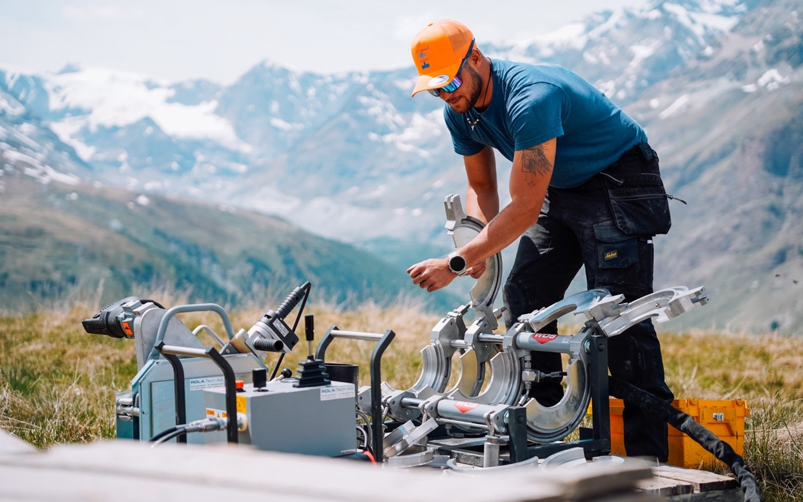
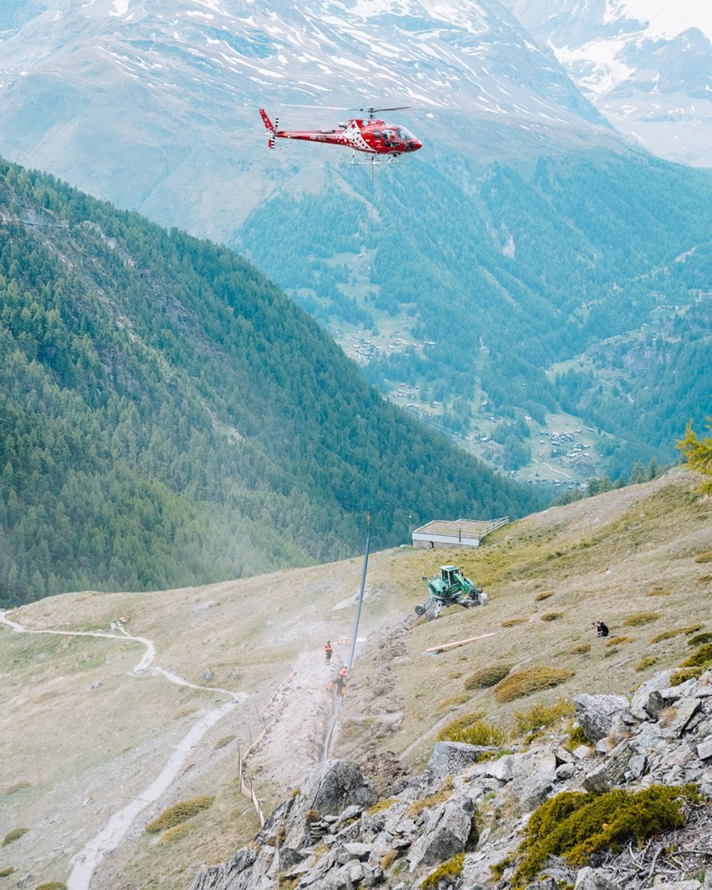
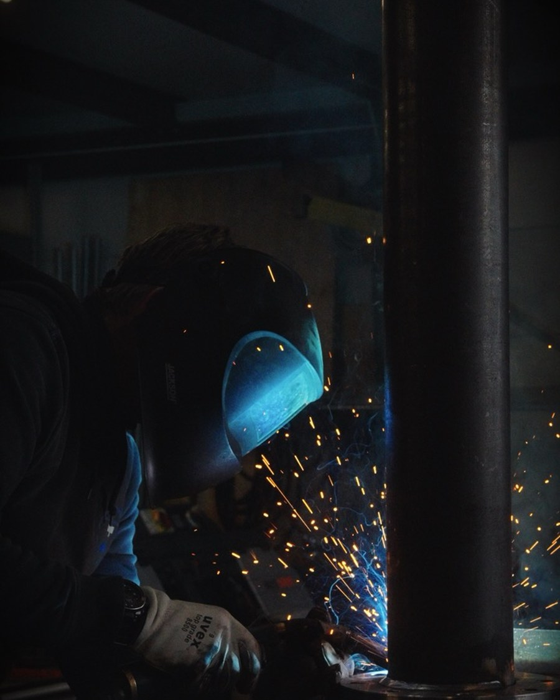
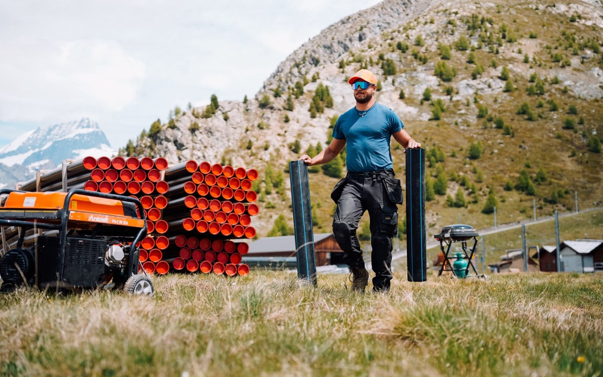
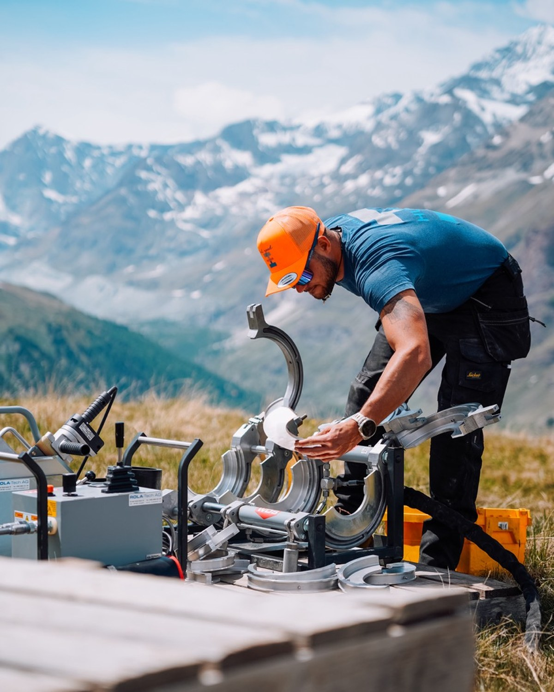
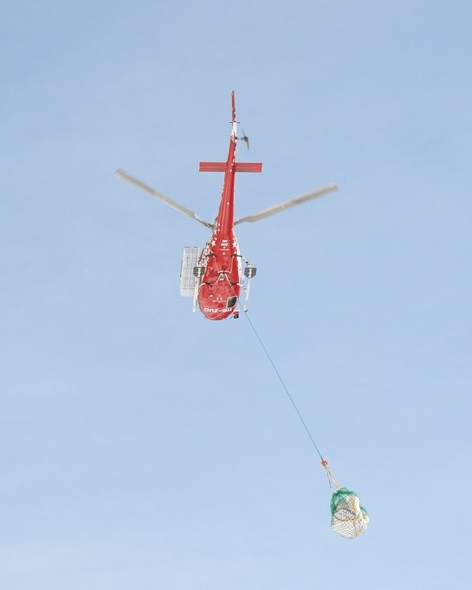
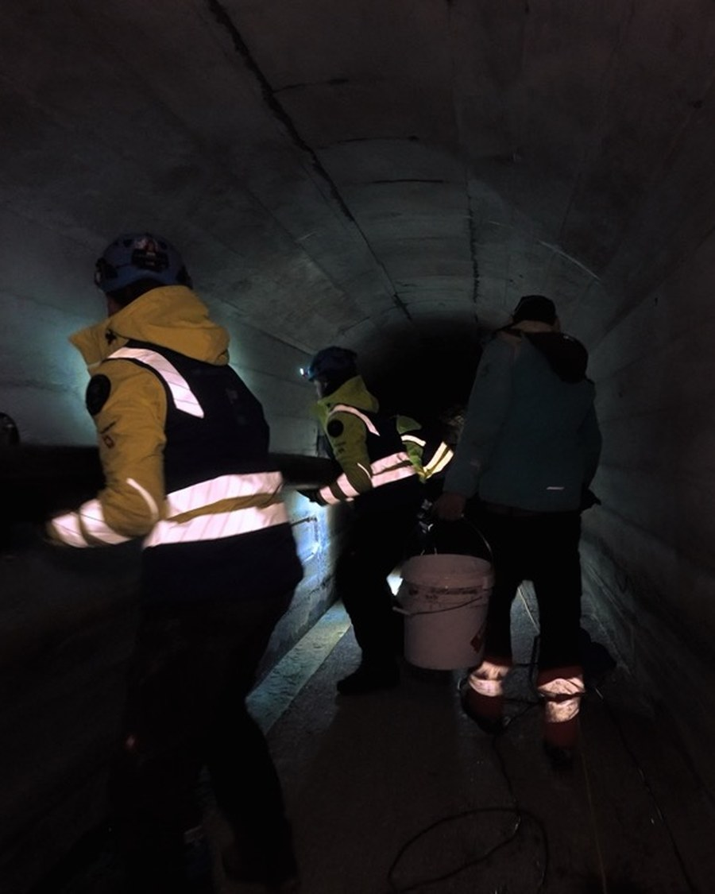
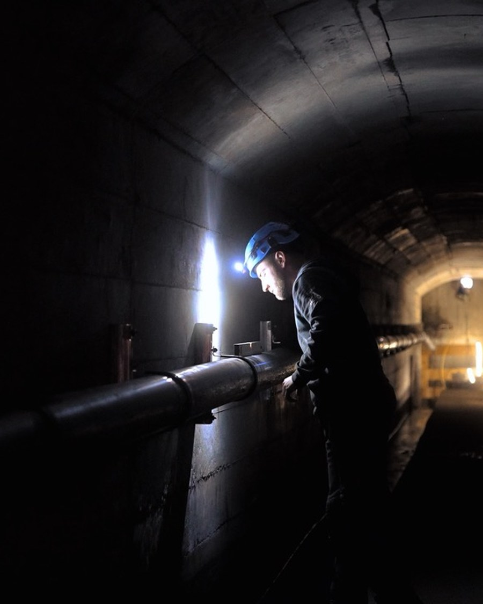
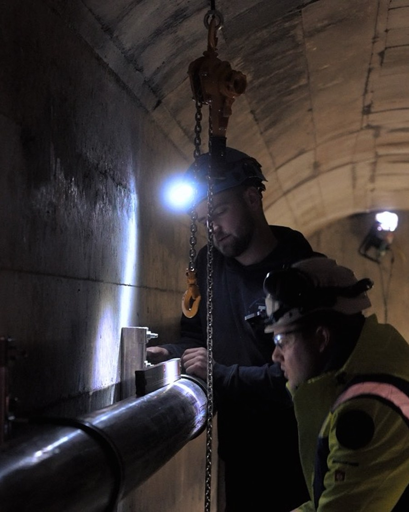
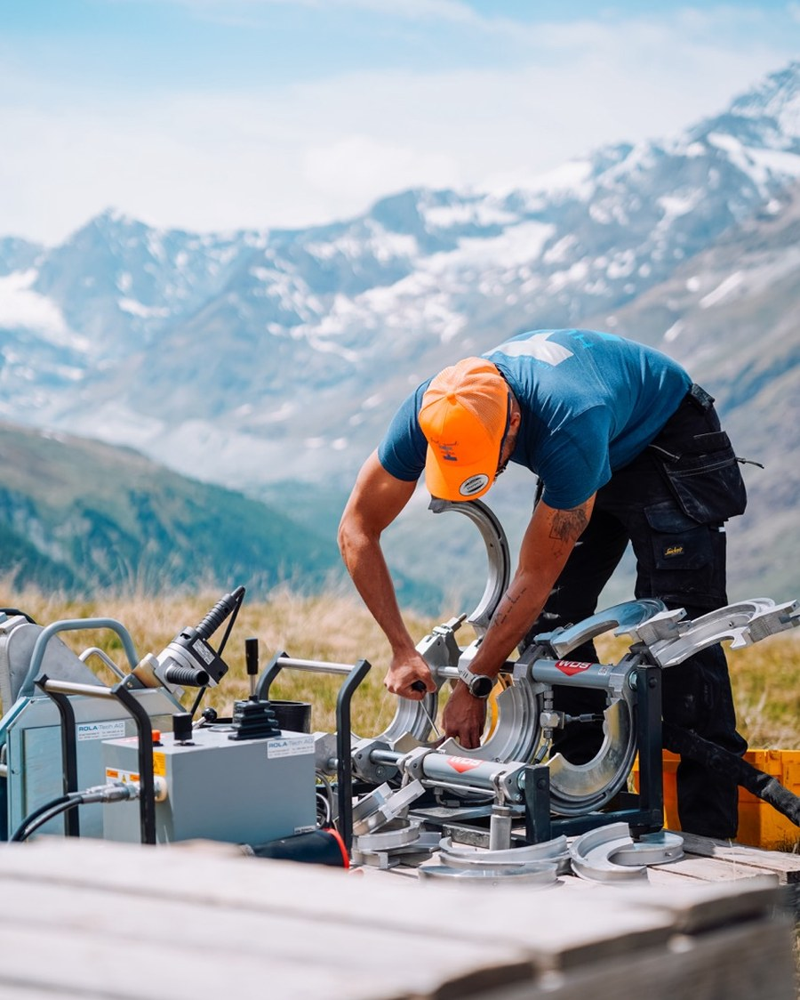
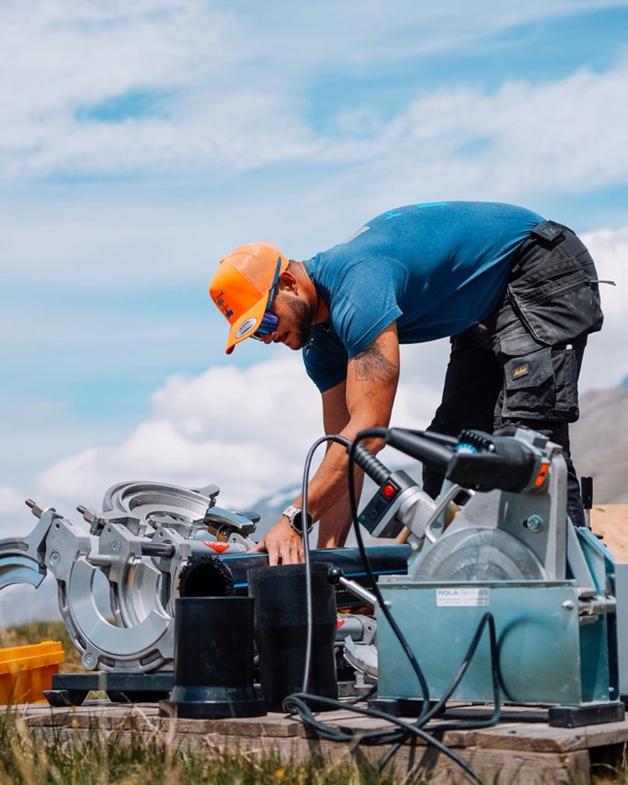
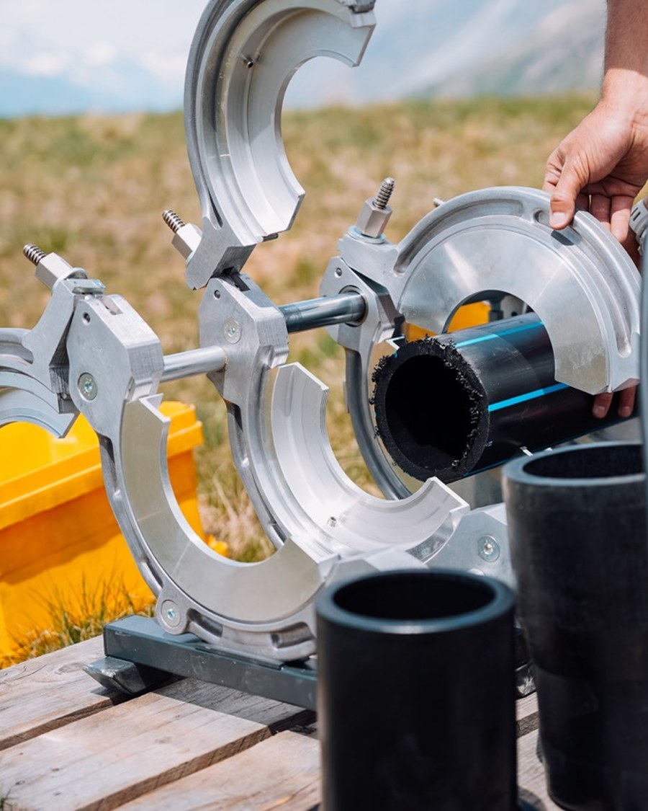
Die Reels
Vom Stollen bis auf 3000 Meter
Zwei Einblicke in die Arbeit der Kilian Huber GmbH — einmal der Helikoptertransport zur Pumpstation Blauherd, einmal die Werkstatt.
Leistungen im Detail
Was wir geliefert haben
 ← Vorheriges Projekt
Lenk Simmental Tourismus — Wander Kampagne
← Vorheriges Projekt
Lenk Simmental Tourismus — Wander Kampagne
 Nächstes Projekt →
Rope Fitness Bern
Nächstes Projekt →
Rope Fitness Bern